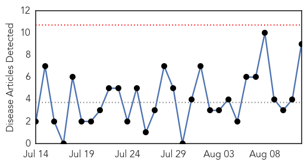
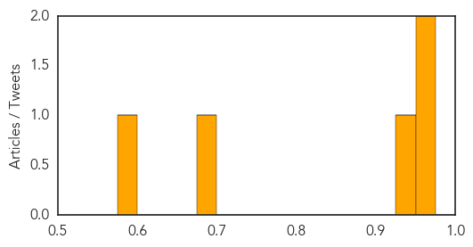

West Nile Virus
30-Day Web Trend
0 alerts, 0 warnings

30-Day Twitter Trend
0 alerts, 0 warnings

Article Locations
Article Confidences

Top Articles:
- 0.997
- News Scan for Aug 12, 2014
- 0.941
- Idaho woman tests positive for West Nile
- 0.937
- Las Crucens urged to be proactive to help curb West Nile virus
- 0.936
- West Nile virus confirmed in Utah
- 0.922
- KSLA News 12 Shreveport, Louisiana News Weather & Sports
- 0.915
- Yazoo County resident dies from West Nile virus
- 0.749
- Mosquito abatement Wednesday in the Truckee Meadows
- 0.617
- Mississippi resident dies from West Nile
- 0.550
- County to overstep city, spray for mosquitoes
Top Tweets:
-
No tweets found for Aug 12, 2014
Dengue Fever
30-Day Web Trend
0 alerts, 0 warnings

30-Day Twitter Trend
5 alerts, 0 warnings

Article Locations

Article Confidences
Top Articles:
- 0.975
- Health Minister says everyone, including public, must play role to prevent outbreaks - Community
- 0.973
- International researchers explore disease modeling techniques at ASU conference
- 0.948
- National Health Profile 2013 findings: Delhi shows surge in dengue cases
- 0.686
- Selangor dengue hotspots down - Nation
- 0.594
- War against dengue in Selangor starting to see good results: Muhyiddin
Top Tweets:
-
No tweets found for Aug 12, 2014